เริ่มต้น: เกมนี้คืออะไร
เริ่มต้น: เกมนี้คืออะไร
เกมกระดานการเงิน ผสม เกมเศรษฐี + Cashflow + ตลาดหุ้น/สินค้า/คริปโต + ธุรกิจเครือข่าย (ธุรกิจ A) เล่นได้ 2–6 คน (คนหรือบอท) บนเครื่องเดียว หรือออนไลน์กับเพื่อน
🏆 ชนะ Lv.1
รายได้จากทรัพย์สิน (Passive) มากกว่ารายจ่ายรวมต่อเดือน ได้ถ้วยข้างชื่อ เกมยังเล่นต่อได้
💎 ชนะ Lv.2
ธุรกิจ A ถึงระดับ ไดมอนด์ เกมจบทันที
🏁 จบเกมเมื่อไรก็ได้
กด "จบเกมและสรุปผล" (ออนไลน์อยู่ในหน้าข้อมูลห้อง) จัดอันดับตามความใกล้ชนะ
จัดอันดับยังไง
คนที่ชนะ Lv.2 อยู่บนสุด ตามด้วยคนที่ชนะ Lv.1 ที่เหลือเรียงตาม ความใกล้ชนะ = รายได้จากทรัพย์สิน ÷ รายจ่ายรวม (เต็ม 100%)
เทิร์นของคุณ
- ทอยลูกเต๋า ปกติ 1 ลูก (ถ้าได้สิทธิ์จากช่องบริจาค เลือกทอย 1 หรือ 2 ลูกได้ 3 เทิร์น)
- เดิน ตามแต้ม ผ่านช่องเงินเดือนได้รับเงินเดือน · ผ่านช่องถนนเลือกข้ามไปอีกชั้นได้
- ทำตามช่องที่หยุด เช่น ซื้ออสังหาฯ จ่ายค่าผ่านทาง พักผ่อน เรียนรู้
- จั่วการ์ดได้ 3 ใบ เลือกจากกองไหนก็ได้ ซ้ำกองได้ (กด "พอแล้ว" เพื่อหยุดก่อนครบ)
- จัดการเงิน ซื้อขายหุ้น กองทุน กู้ ฝาก ซื้อดีลจากตลาด จ้างคนช่วยงาน ใช้การ์ดทักษะ
- จบเทิร์น (ระบบถามยืนยันก่อน)
⏱ 3 นาทีต่อเทิร์น
หมดเวลาระบบจบเทิร์นให้ คำถามที่ค้างถือว่าตอบ "ไม่"
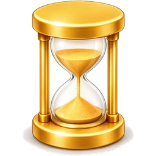
จบไว ได้เวลา +1กดจบเทิร์นก่อนครบ 3 นาที ได้ ⏳ +1
🧹 จ้างคนช่วยงาน
฿10,000 ได้ ⏳ +1 จ้างได้เทิร์นละครั้ง
ค่าพลัง ❤ ⏳ 📚
ค่าพลังมี 3 อย่าง เต็มอย่างละ 10 การ์ดและดีลส่วนใหญ่ต้องใช้ค่าพลังด้วย ไม่ใช่แค่เงิน
หัวใจ
สุขภาพกายและใจ ใช้กับการ์ดธุรกิจ/งานบางใบ
เวลา
ใช้มากที่สุด เรียนรู้ ดีลธุรกิจ อสังหาฯ ธุรกิจ A
ความรู้
เป็นเกณฑ์ขั้นต่ำของการลงทุน · 7 ขึ้นไปมองเห็นกลโกง
ได้ทุกเทิร์น
| เงื่อนไข | ได้ |
|---|---|
| รายได้จากทรัพย์สินถึง 25% ของรายจ่าย (ตอนจบเทิร์น) | ⏳ +1 |
| … ถึง 50% | ⏳ +2 |
| … ถึง 75% | ⏳ +3 |
| จบเทิร์นก่อนหมดเวลา | ⏳ +1 |
| จ้างคนช่วยงาน ฿10,000 | ⏳ +1 |
ทุกครั้งที่รับเงินเดือน
| ค่าพลัง | การเปลี่ยนแปลง |
|---|---|
| หัวใจ | สุ่ม 0 / +1 / +2 แล้ว −1 ต่อความเครียด 1 ข้อ |
| เวลา | สุ่ม +1 ถึง +3 แล้ว −1 ต่อลูก 1 คน |
| ความรู้ | สุ่ม 0 หรือ −1 (ความรู้ลดลงตามเวลา) |
ความเครียด (ข้อละ ❤ −1): รายรับไม่พอรายจ่าย · หนี้ธนาคารเกิน 3 เท่าของเงินเดือน · เวลาเหลือ 2 หรือต่ำกว่า · ตกงานหรือโดนใบเตือน
ได้เป็นครั้งๆ
- 🌿 ช่องพักผ่อน: ❤ +1 · ⏳ +1 ถึง +2
- 🎓 ช่องศูนย์เรียนรู้: 📚 +2 ถึง +4 และได้การ์ดทักษะฟรี 1 ใบ
- 🏅 ธุรกิจ A เลื่อนระดับ: ❤ +2 · ⏳ + เท่ากับจำนวนระดับที่ขึ้น
- การ์ดเรียนรู้และการ์ดความรู้ธุรกิจ: 📚 +
- การ์ดทักษะ "พักฟื้นพลัง" (❤ +3) และ "บริหารเวลา" (⏳ +3)
- การ์ดชีวิตบางใบ เช่น โบนัสประจำปี ฟิตเนส ของขวัญ
หัวใจต่ำ
การหักค่าพลัง
การ์ดชีวิต/โอกาส/ธุรกิจ A และการซื้อทอง/หุ้นจอง หักค่าพลังออกจริง · การ์ดเรียนรู้และอสังหาฯบนกระดานใช้ 📚 เป็นเกณฑ์ขั้นต่ำ ไม่หัก · ถ้าค่าพลังไม่พอ ซื้อไม่ได้ (เงินไม่พอกู้ได้ แต่ค่าพลังต้องครบ)
เงิน: รายรับ รายจ่าย
💼 Active
เงินเดือน + รายได้เสริมที่ต้องลงแรง หายไปตอนตกงาน
🌱 Passive
รายได้จากทรัพย์สิน: ค่าเช่า กำไรธุรกิจ ปันผล ดอกเบี้ยเงินฝาก ธุรกิจ A ตัวนี้ทำให้ชนะ
🧾 รายจ่ายรวม
ภาษี ผ่อนบ้าน ผ่อนรถ บัตรเครดิต ค่าครองชีพ ค่าเลี้ยงลูก ดอกเบี้ยเงินกู้ รายจ่ายเพิ่มจากการ์ด
วันเงินเดือน
เดินผ่านหรือหยุดช่องเงินเดือน (หรือเปิดได้การ์ดเงินเดือนในกองธุรกิจ A) ได้ กระแสเงินสด = เงินเดือน + Active + Passive − รายจ่ายรวม พร้อมป๊อปอัปสรุปบัญชี
เงินสดติดลบ
ระบบถอนเงินฝากประจำมาจ่ายก่อน ถ้ายังไม่พอจะกู้ธนาคารให้อัตโนมัติ (มีกล่อง 📌 แจ้งสาเหตุ)
อาชีพ 8 แบบ
เริ่มเกมสุ่มอาชีพให้ทุกคน อาชีพกำหนดเงินเดือน เงินเก็บ รายจ่าย ค่าเลี้ยงลูก และค่าพลังเริ่มต้น
| อาชีพ | เงินเดือน | เงินเก็บ | รายจ่าย | ค่าเลี้ยงลูก/คน | ❤ ⏳ 📚 |
|---|---|---|---|---|---|
| พนักงานส่งของ | ฿20,000 | ฿15,000 | ฿14,000 | ฿2,000 | 8 · 6 · 2 |
| ครู | ฿33,000 | ฿15,000 | ฿22,000 | ฿2,300 | 6 · 5 · 5 |
| พยาบาล | ฿36,000 | ฿20,000 | ฿25,000 | ฿2,500 | 5 · 4 · 4 |
| ผู้จัดการ | ฿46,000 | ฿20,000 | ฿31,000 | ฿3,200 | 5 · 3 · 4 |
| วิศวกร | ฿50,000 | ฿25,000 | ฿33,000 | ฿3,500 | 6 · 4 · 5 |
| ทนายความ | ฿75,000 | ฿30,000 | ฿53,000 | ฿5,300 | 4 · 3 · 6 |
| นักบิน | ฿95,000 | ฿35,000 | ฿68,000 | ฿6,700 | 5 · 3 · 5 |
| แพทย์ | ฿130,000 | ฿40,000 | ฿94,000 | ฿9,100 | 4 · 2 · 7 |
รายจ่าย = ภาษี + ผ่อนบ้าน + ผ่อนรถ + บัตรเครดิต + ค่าครองชีพ ตอนเริ่มเกม (ค่าเริ่มต้น แก้ได้ในหน้าตั้งค่า → ฐานข้อมูล) · เงินเดือนสูงก็รายจ่ายสูง ชนะยากพอๆ กัน
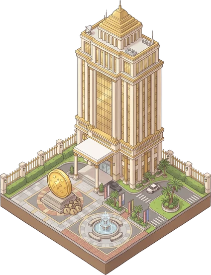
กระดาน 2 ชั้น🌾 ชั้นนอก = ต่างจังหวัด
48 ช่อง 4 เขต (เขตละ 12 ช่อง: ที่ดิน 6 ช่อง) ที่ดินถูก ค่าครองชีพต่ำ
🏙 ชั้นใน = เมืองหลวง
32 ช่อง 4 ย่าน อสังหาฯแพง ค่าครองชีพสูง แต่สร้างธุรกิจง่าย: ดีลธุรกิจลด 20% ตอนอยู่ชั้นใน และมีช่องศูนย์ธุรกิจ
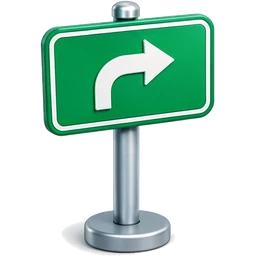
ถนนทุกเขตมีช่องถนน เดินผ่านแล้วเลือกข้ามไปถนนอีกชั้นได้ การข้ามนับ 1 ก้าว
เขตและย่าน
ค่าครองชีพ = ตัวคูณค่าใช้จ่ายของการ์ดชีวิต ตามเขตที่ยืนอยู่ · ผลตอบแทน = กำไรต่อเดือนของอสังหาฯ/ธุรกิจในเขตนั้น (ยิ่งสูงยิ่งต้องใช้ความรู้มาก ×1–2.5)
| เขต | ค่าครองชีพ | ผลตอบแทน/เดือน |
|---|---|---|
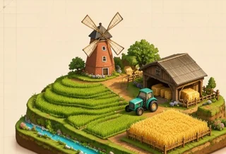 เขตเกษตรกรรม | ×0.7 | 6% |
| เขตอุตสาหกรรม | ×0.8 | 7% |
| เขตท่องเที่ยว | ×1.0 | 7.5% |
| เขตชุมชน | ×0.85 | 6.5% |
| ย่านที่พักหรู | ×1.7 | 6.5% |
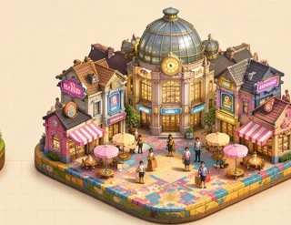 ย่านช้อปปิ้ง | ×1.5 | 7% |
| ย่านธุรกิจ | ×1.4 | 7.5% |
| ย่านการเงิน | ×1.3 | 8% |
ช่องพิเศษ
เงินเดือน
รับกระแสเงินสด · ชั้นนอก 4 มุม (มุมแรก = จุดเริ่ม) · ชั้นใน 2 มุม
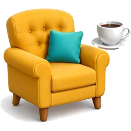
พักผ่อน❤ +1 · ⏳ +1 ถึง +2
🎉 สถานบันเทิง
ชั้นนอก เขตละ 1 ช่อง (ร้านคาราโอเกะ · สนามไดรฟ์กอล์ฟ · บีชคลับ · โรงภาพยนตร์) · บังคับจ่ายสุ่ม ฿1,000–20,000 ได้ ❤ ⏳ 📚 อย่างละ +1 ถึง +5 ยิ่งจ่ายมากยิ่งได้มาก
🎓 ศูนย์เรียนรู้
📚 +2 ถึง +4 + การ์ดทักษะสุ่ม 1 ใบ ฟรี ไม่เสียหัวใจ/เวลา
ตกงาน
ชั้นละ 1 ช่อง · รอบ 1–5 แค่ใบเตือน 🟨 · ตั้งแต่รอบ 6 ตกงานจริง (ดู เหตุการณ์)
บริจาคการกุศล
บริจาค 10% ของรายรับรวม แล้วเลือกทอย 1 หรือ 2 ลูกได้ 3 เทิร์น
ฟุ่มเฟือย
บังคับจั่วการ์ดรายจ่าย 1 ใบ
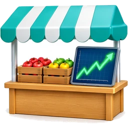
ตลาดหลักทรัพย์ชั้นใน · เทิร์นนี้ซื้อขายหุ้น/สินค้าไม่เสียค่าคอม + ได้ข่าวตลาด
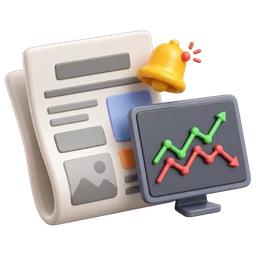
ข่าวตลาดชั้นใน · เปิดข่าว ราคาหุ้น/สินค้าขยับ
ศูนย์ธุรกิจ
ชั้นใน · ได้ข้อเสนอดีลธุรกิจ 1 ดีล ลดเงินลงทุน 20%
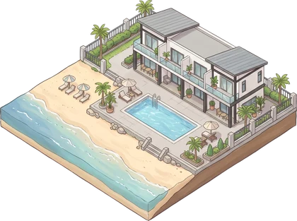
อสังหาฯบนกระดาน- หยุดช่องว่าง: ซื้อได้ ได้ค่าเช่า (Passive) ทุกเดือน · ต้องมีความรู้ถึงเกณฑ์
- หยุดช่องของตัวเอง: อัปเกรดได้ 2 ขั้น ใช้ ⏳ 1 ต่อขั้น ค่าเช่าเพิ่ม
- หยุดช่องของคนอื่น: จ่ายค่าผ่านทางให้เจ้าของ (ยิ่งอัปเกรดยิ่งแพง)
- ครบทั้งเขต: ค่าเช่า ×1.5 และค่าผ่านทาง ×2
- ขายคืนธนาคาร: ได้ 80% ของเงินที่ลงไป
ราคาชั้นนอก ฿20,000–110,000 (ใหม่: โรงสีข้าว ท่าเรือขนส่งสินค้า สวนน้ำ คลินิกเอกชน) · ชั้นใน ฿120,000–400,000 · แตะช่องบนกระดานเพื่อดูรายละเอียด
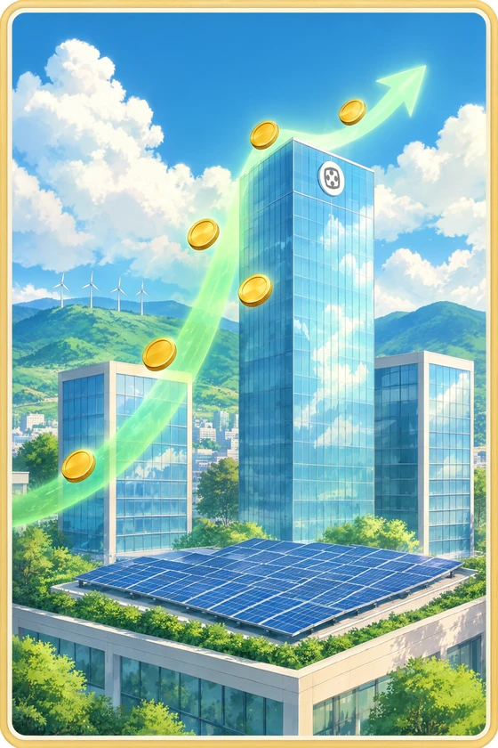
การ์ด 4 กองจั่วได้ 3 ใบต่อเทิร์น เลือกกองเองได้
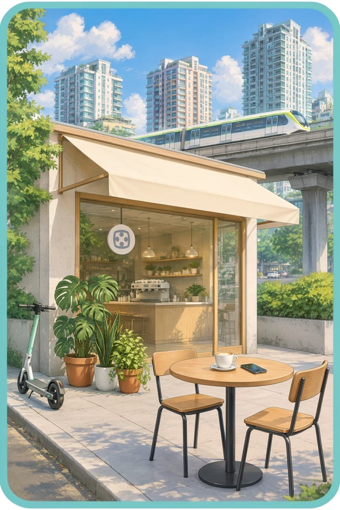
ดำเนินชีวิตแหล่งเติม ❤ ⏳ ไม่หักค่าพลัง จ่ายเป็นเงินแทน ราคาคูณค่าครองชีพเขต · ข้ามได้ ยกเว้นอุบัติเหตุและลูกคนที่ 1–2
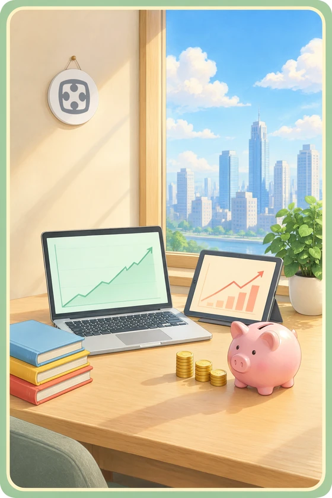
เรียนรู้จ่ายค่าเรียน ได้ความรู้และ/หรือการ์ดทักษะ · ระวังคอร์สหลอกลวง
โอกาสชีวิต
อสังหาฯ ธุรกิจ ทองราคาพิเศษ หุ้นจอง (IPO) คนขอซื้อทรัพย์สิน รีไฟแนนซ์บ้าน และแชร์ลูกโซ่
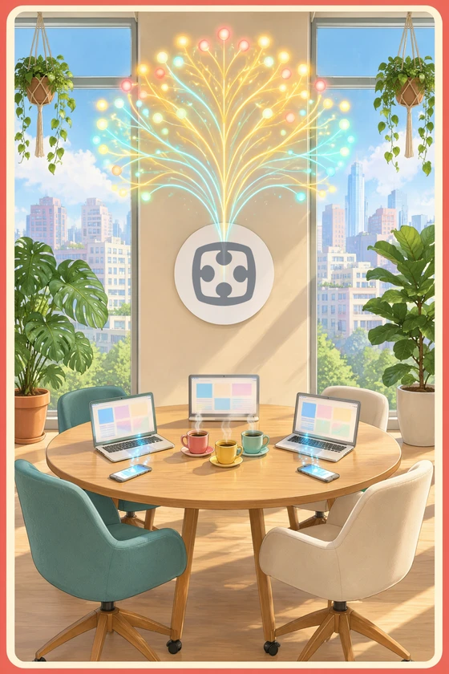
ธุรกิจ Aยังไม่สมัคร = เปิดแล้วสมัครได้ ฿900 (เสียสิทธิ์จั่วใบนั้น) · สมัครแล้ว = สร้างสายงาน ทำ PV การ์ดชีวิตประจำวัน
กลโกง
แชร์ลูกโซ่และคอร์สหลอกลวงดูเหมือนดีลดี · ความรู้ 7 ขึ้นไป หรือมีทักษะ "รู้ทันกลโกง" จะเห็นว่าเป็นกลโกง · แชร์ลูกโซ่มีโอกาส 50% ทุกวันเงินเดือนที่จะปิดตัวหนีพร้อมเงินลงทุน
ลูก
- สูงสุด 4 คน · คนที่ 1–2 บังคับรับ คนที่ 3–4 เลือกได้
- ค่าเลี้ยงดูรายเดือนตามอาชีพ · ⏳ −1 ต่อคนทุกวันเงินเดือน
- แรงบันดาลใจ: การ์ดที่ใช้ ❤ ลดลง 1 ต่อลูก · รายได้ธุรกิจ (กองโอกาส + ธุรกิจ A) +5% ต่อลูก
ธุรกิจ A (ธุรกิจเครือข่าย)
ไม่มีช่องบนกระดาน · สมัคร ฿900 ได้ที่แท็บธุรกิจ A หรือตอนเปิดกองการ์ดธุรกิจ A · การ์ดในกองนี้ใช้เงินน้อยแต่ใช้ค่าพลังมาก
PV และสายงาน
สร้างสายงาน 6 สาย (A–F) แต่ละการ์ดเพิ่ม PV ให้สายใดสายหนึ่ง · ยอดกลุ่ม = PV ส่วนตัว + PV ทุกสาย กำหนดขั้นโบนัส:
| ยอดกลุ่ม (PV) | ขั้นโบนัส |
|---|---|
| 3,000 | 3% |
| 7,000 | 6% |
| 15,000 | 9% |
| 30,000 | 12% |
| 55,000 | 15% |
| 90,000 | 18% |
| 150,000 | 21% |
สายงานที่ทำได้ 150,000 PV ขึ้นไป = สายที่ถึง 21%
ระดับ
เช็กทุกวันเงินเดือน · ขึ้นระดับได้โบนัสพินเป็นเงินสด + ❤ +2 + ⏳ เท่าจำนวนระดับที่ขึ้น
สมาชิก
สมัครแล้ว
ซิลเวอร์
ยอดกลุ่มถึง 21%
+฿10,000
โกลด์
21% ติดกัน 2 เดือน
+฿20,000
แพลทินัม
21% ติดกัน 3 เดือน
+฿50,000
รูบี้
ยอดกลุ่ม 300,000 PV
+฿80,000
เพิร์ล
3 สายถึง 21%
+฿100,000
เอเมอรัลด์
3 สายถึง 21% ติดกัน 2 เดือน
+฿150,000
ไดมอนด์ 💎
ครบ 6 สาย (A–F) ถึง 21%
+฿300,000 · ชนะ Lv.2
ธนาคาร (แท็บธนาคาร)
แท็บธนาคารมีแท็บย่อย: 🏦 ธนาคาร · 📈 กองทุน · 🏪 ตลาด · 🔁 เทรด
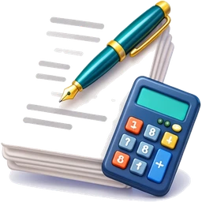
เงินกู้ดอกเบี้ย 2% ต่อเดือน (นับในรายจ่าย) · กู้ซื้อการ์ดทุกใบได้ แต่ค่าพลังต้องครบ
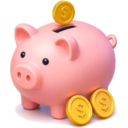
ฝากประจำดอกเบี้ย 0.25% ต่อเดือน นับเป็น Passive · เงินสดติดลบถอนเงินฝากก่อนกู้
กองทุนรวม (แท็บย่อยกองทุน)
ซื้อขายเป็นหน่วย ราคา (NAV) เริ่ม ฿10 เดินตามราคาจริงของกองทุนจริงช่วงเดียวกัน · ค่าธรรมเนียม 1%
| กองทุน | ความเสี่ยง |
|---|---|
| MMF ตลาดเงิน | ต่ำมาก |
| BOND ตราสารหนี้ | ต่ำ |
| DIVF หุ้นปันผล (ปันผล ฿0.04/หน่วย) | ปานกลางค่อนสูง |
| SET50 ดัชนี | สูง |
| GLOB หุ้นโลก | สูงมาก |
| GOLDF ทองคำ | สูง |
เทรด หุ้น · สินค้า · คริปโต (แท็บย่อยเทรด)
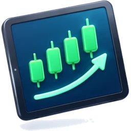
หุ้นTTEC · PWR · BNK · FOOD · REIT · GROW · บางตัวมีปันผล (นับเป็น Passive)
สินค้า
ทองคำ · น้ำมันดิบ · ข้าวหอมมะลิ · เหล็ก
คริปโต
BTC · ETH · SOL · DOGE ราคาเดินตามของจริงย้อนหลัง (เฉลยช่วงเวลาตอนจบเกม)
ค่าคอม 1% · ฟรีเมื่อหยุดช่องตลาดหลักทรัพย์ หรือมีทักษะ "นักวิเคราะห์หุ้น" · ซื้อขายได้ตลอดเทิร์นของคุณ
ตลาด NPC (แท็บย่อยตลาด)
- ทุกต้นรอบ NPC เปิดการ์ดโอกาส 2 ใบ · ธุรกิจ/อสังหาฯขึ้นแท็บตลาด อยู่ 2 รอบ
- ซื้อได้ในตาของคุณ ใครยืนยันก่อนได้ก่อน (บอทซื้อได้เฉพาะตาของบอท)
- ติดป้ายขายทรัพย์สิน ซื้อจากป้ายคนอื่น หรือขายให้ธนาคารได้
ข่าวสาร
ข่าวหุ้น/คริปโต/สินค้า/กองทุน ขึ้นแท็บข่าวสาร มีผลกับราคาทันที โชว์ 2 รอบ
ทักษะ (การ์ดทักษะ)
ได้จากการ์ดเรียนรู้และศูนย์เรียนรู้ · ดูได้ที่แท็บผู้เล่น → ทักษะ
| ทักษะ | ชนิด | ผล |
|---|---|---|
| นักลงทุนอสังหาฯ | ติดตัว | ค่าเช่าอสังหาฯ +20% |
| นักวิเคราะห์หุ้น | ติดตัว | ไม่เสียค่าคอมหุ้น · ปันผล +20% |
| เจ้าของกิจการ | ติดตัว | กำไรธุรกิจ +25% |
| ผู้นำเครือข่าย | ติดตัว | ธุรกิจ A: PV และ Passive จากการ์ด +20% |
| วางแผนภาษี | ติดตัว | ภาษี −30% |
| นักเจรจา | ติดตัว | ซื้ออสังหาฯและดีลถูกลง 10% |
| รู้ทันกลโกง | ติดตัว | มองเห็นกลโกง |
| ปริญญาโท | ติดตัว | เงินเดือน +15% |
| เดินตามใจ | ใช้ 2 ครั้ง | เลือกแต้มเดินเอง |
| พักฟื้นพลัง | ใช้ 2 ครั้ง | ❤ +3 |
| บริหารเวลา | ใช้ 2 ครั้ง | ⏳ +3 |
| ต่อรองดีลใหญ่ | ใช้ 2 ครั้ง | ส่วนลด 20% การซื้อครั้งถัดไป |
| ประกันรายได้ | ใช้ 1 ครั้ง | กันการตกงาน |
| ข่าววงใน | ใช้ 2 ครั้ง | ดูข่าวตลาดใบถัดไปล่วงหน้า |
| ขยันจั่ว | ใช้ 2 ครั้ง | จั่วการ์ดเพิ่ม +1 |
เหตุการณ์สำคัญ
 ใบเตือน 🟨
ใบเตือน 🟨
หยุดช่องตกงานในรอบที่ 1–5: ยังไม่ตกงาน แต่เงินเดือนลด 50% ในวันเงินเดือน 2 ครั้งถัดไป
ตกงาน
ตั้งแต่รอบที่ 6 หรือจากการ์ดตกงาน: ❤ −2 และวันเงินเดือน 2 ครั้งถัดไปได้แค่ Passive − รายจ่าย · เงินไม่พอต้องกู้หรือขายทรัพย์สินราคา 50%
💀 ล้มละลาย
หนี้ธนาคารเกินเพดาน ทรัพย์สินถูกยึดหมด เริ่มใหม่จากอาชีพเดิม
🚑 หัวใจต่ำ
❤ 2 หรือต่ำกว่า ทุกวันเงินเดือนจ่ายค่ารักษา 20% ของเงินเดือน
กติกาที่ระบบทำให้อัตโนมัติ (กู้อัตโนมัติ ค่ารักษา ล้มละลาย ใบเตือน ได้เวลาคืน) จะมีกล่อง 📌 มุมจอแจ้งสาเหตุ
เล่นออนไลน์
- เข้าสู่ระบบ (Google · อีเมล · แขก)
- สร้างห้อง ได้เลขห้อง 5 หลัก ส่งให้เพื่อน หรือแชร์ลิงก์ห้อง
- เจ้าของห้องเลือกที่นั่งเป็นคนหรือบอท (2–6 ที่) แล้วกดเริ่ม
เล่นพร้อมกัน
ห้องใหม่ทุกคนเล่นเทิร์นของตัวเองพร้อมกัน คนละ 3 นาที → แล้วบอทเล่นทีละตัว → ขึ้นรอบใหม่ · ที่ดินและดีลในตลาด ใครยืนยันก่อนได้ก่อน · ห้องเก่าบางห้องยังเป็นแบบเล่นทีละคน
💤 สถานะ Bot
- ติดเมื่อ: ไม่ทอยเต๋าภายใน 3 นาที หรือออฟไลน์เกิน 1 นาที
- ระหว่างติด: บอททอยเต๋าแทน ตอบ "ไม่" ทุกคำถาม ไม่จั่วการ์ด แล้วจบเทิร์นทันที
- กลับมาเล่น: กดปุ่ม "ปลดสถานะ Bot" บนหน้าจอเทา
ข้อมูลห้อง
แตะป้าย "ห้อง xxxxx ⓘ" ดูเจ้าของห้อง 👑 · เครื่องที่คุมรอบ 🎮 · สถานะทุกคน · เวอร์ชันเกม (ขึ้นเตือนถ้าใครเปิดเวอร์ชันเก่า) · ปุ่มแชร์ลิงก์ · จบเกม (เครื่องคุมรอบ) · ปิดห้อง (เจ้าของห้อง) · ออกจากเกม
คะแนนสะสม & Leader board
ทุกครั้งที่จบเกมออนไลน์ได้คะแนนผูกกับบัญชี ดูอันดับได้ที่หน้าล็อกอินและหน้าแรก (เดือนนี้ / ตลอดกาล) · บัญชีแขกไม่เก็บคะแนน · เกมจบตอนไม่อยู่ ได้คะแนนย้อนหลังตอนกลับมา
คะแนน = (อันดับ + โบนัส) × ตัวคูณจำนวนคน
| รายการ | คะแนน |
|---|---|
| อันดับที่ 1 / 2 / 3 / 4 / 5–6 | 10 / 6 / 4 / 2 / 1 |
| 🏆 ชนะ Lv.1 | +10 |
| 💎 ธุรกิจ A ไดมอนด์ | +25 |
| ความใกล้ชนะ ทุก 10% | +1 (สูงสุด +10) |
| ไม่เคยล้มละลาย / ล้มละลาย | +3 / −5 |
| เล่นจนจบเกม | +2 |
| ตัวคูณ: คนเดียว (กับบอท) · 2 คน · 3–4 คน · 5–6 คน | ×0.5 · ×1 · ×1.2 · ×1.5 |
เกมสั้นกว่า 10 รอบได้แค่ +2 · ออกจากเกมกลางคันไม่ได้คะแนน · คะแนนต่อเกมไม่ติดลบ
คำถามพบบ่อย
เวลาหมดบ่อย ทำยังไงดี
จบเทิร์นให้เร็ว (+1) · จ้างคนช่วยงาน (+1) · หยุดช่องพักผ่อน · สร้างรายได้จากทรัพย์สินให้ถึง 25% ของรายจ่าย แล้วจะได้เวลาคืนทุกเทิร์น
ความรู้ลดลงเอง
ใช่ ทุกวันเงินเดือนสุ่มลด 0–1 · เติมที่ศูนย์เรียนรู้ การ์ดเรียนรู้ และการ์ดความรู้ธุรกิจ
เงินไม่พอซื้อดีล
กู้ได้ตอนซื้อ (ดอกเบี้ย 2%/เดือน) แต่ระวังเพดานหนี้ และค่าพลังต้องครบ
เกมค้าง รอนาน (ออนไลน์)
เปิดหน้าข้อมูลห้อง ดูว่าใครคุมรอบ และทุกคนใช้เวอร์ชันล่าสุดหรือยัง ถ้ามีคำเตือนเวอร์ชันเก่า ให้คนนั้นรีเฟรช